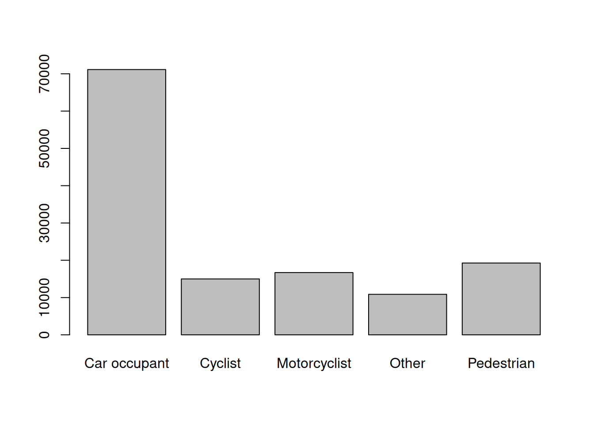
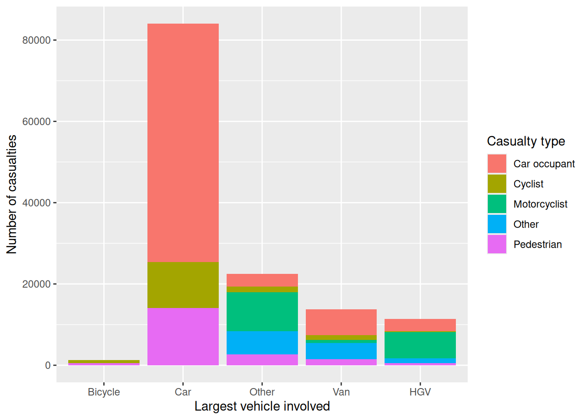
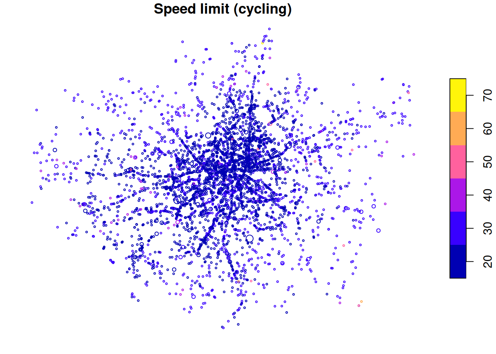
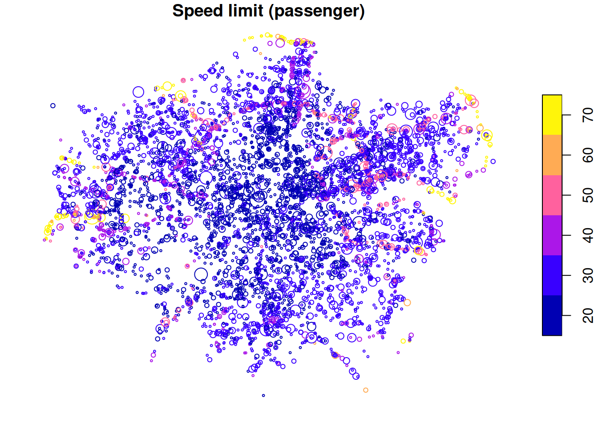
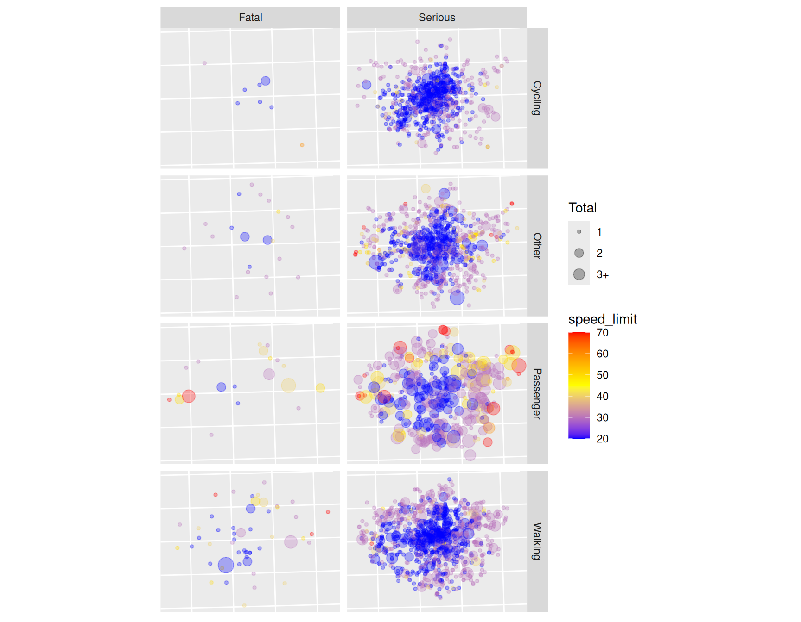

library(stats19)
library(dplyr)
library(ggplot2)
ac = get_stats19(year = 2023, type = "acciden")
ca = get_stats19(year = 2023, type = "casualt")
ve = get_stats19(year = 2023, type = "vehicle")8 Joining road crash tables
8.1 STATS19 tables
Thus far, we have been working primarily with ‘accident’ level data, but there is much useful data in other tables. As outlined in the stats19 vignette — which you can view by entering the command vignette("stats19") to get extended help pages about R packages — there are three main tables that contain STATS19 data.
Let’s read-in data from 2023 to take a look:
The three objects read-in above correspond to the main types of entity that are recorded by the police:
- Crashes: The ‘crash event’ table contains general data about crashes, including where and when they happened and the conditions in which the crash occurred (e.g. light levels in the column
light_conditionsin theacobject). For historical reasons, crash level data is stored in tables called ‘Accidents’ (a term that has fallen out of favour because it implies that nobody was at fault). See names for all 33 variables in the crashes table by running the commandnames(ac). Crashes range from collisions involving only one vehicle and another entity (e.g. a person on foot, bicycle or a car) causing only ‘slight’ injuries such as a graze, to multi-vehicle pile-ups involving multiple deaths and dozens of slight and serious injuries. - Casualties: The casualties table, assigned to an object called
cain the code above, contains data at the casualty level. As you will see by running the commandnames(ca), the STATS19 casualties table has 16 variables includingage_of_casualty,casualty_severityandcasualty_type, reporting the mode of transport in which the person was travelling when they were hit. - Vehicles: The vehicles table, assigned to
veabove, contains information about the vehicles and their drivers involved in each collision. As you will see by running the commandnames(ve), the 23 variables in this table includesvehicle_type,hit_object_off_carriagewayandfirst_point_of_impact. Information about the driver of vehicles involved is contained in variables such asage_of_driver,engine_capacity_ccandage_of_vehicle.
Each table represents the same phenomena: road casualties in Great Britain in 2023. Therefore, you may expect they would have the same number of rows, but this is not the case:
nrow(ac)[1] 104258nrow(ca)[1] 132977nrow(ve)[1] 189815The reason for this is that there are, on average, more than one casualty per crash (e.g. when a car hits two people), and more than one vehicle, including bicycles, per crash. We can find the average number of casualties and vehicles per crash as follows:
nrow(ca) / nrow(ac)[1] 1.275461nrow(ve) / nrow(ac)[1] 1.820628The output of the commands above show that there are around 1.3 casualties and 1.8 vehicles involved in each crash record in the STATS19 dataset for 2023. Each table contains a different number of columns, reporting the characteristics of each casualty and each driver/vehicle for the ca and ve datasets respectively.
ncol(ac)[1] 38ncol(ca)[1] 21ncol(ve)[1] 34The output of the previous code chunk shows that we have more variables in the ‘accidents’ table than the others but the others, but the other tables are data rich with 16 columns on the casualties and 23 on the vehicles. To check that the datasets are consistent, we can check that the number of casualties reported in the crashes table is equal to the number of rows in the casualties table, and the same for the vehicles table:
ac$number_of_casualties = as.numeric(ac$number_of_casualties)
ac$number_of_vehicles = as.numeric(ac$number_of_vehicles)
sum(ac$number_of_casualties) == nrow(ca) [1] TRUEsum(ac$number_of_vehicles) == nrow(ve) [1] TRUE8.2 Joining casualty data
To join casualty (or vehicle) data onto the ac object above, the inner_join() function from dplyr can be used as follows:
ac_cas_joined = inner_join(ac, ca)The above command worked because the two datasets have a shared variable name: accident_index. Note that the command worked by duplicating accident records for multiple casualties. We can see this finding the accident that had the most crashes and printing the results in the ac and new joined dataset, as follows:
id_with_most_crashes = ac %>%
top_n(n = 1, wt = number_of_casualties) %>%
pull(accident_index)
id_with_most_crashes[1] "2023520300610"ac %>% filter(accident_index == id_with_most_crashes) %>%
select(accident_index, accident_severity, number_of_vehicles, number_of_casualties)# A tibble: 1 × 4
accident_index accident_severity number_of_vehicles number_of_casualties
<chr> <chr> <dbl> <dbl>
1 2023520300610 Serious 3 70ac_cas_joined %>% filter(accident_index == id_with_most_crashes) %>%
select(accident_index, accident_severity, number_of_vehicles, number_of_casualties, casualty_reference)# A tibble: 70 × 5
accident_index accident_severity number_of_vehicles number_of_casualties
<chr> <chr> <dbl> <dbl>
1 2023520300610 Serious 3 70
2 2023520300610 Serious 3 70
3 2023520300610 Serious 3 70
4 2023520300610 Serious 3 70
5 2023520300610 Serious 3 70
6 2023520300610 Serious 3 70
7 2023520300610 Serious 3 70
8 2023520300610 Serious 3 70
9 2023520300610 Serious 3 70
10 2023520300610 Serious 3 70
# ℹ 60 more rows
# ℹ 1 more variable: casualty_reference <chr>8.3 Joining vehicle data
The same approach can be used to join vehicle data onto the crash record data:
ac_veh_joined = inner_join(ac, ve)This information can be used as the basis of who-hit-who visualisation, in this case looking at vehicles involved in the most common type of casualties (see the trafficalmr package for functions to recode stats19 data):
casualty_types_df = ac_cas_joined |>
count(casualty_type) |>
arrange(desc(n))
# top_casualty_types
# 1 Car occupant 71145
# 2 Pedestrian 19263
# 3 Cyclist 14999
# 4 Motorcycle 125cc and under rider or passenger 9115
# 5 Motorcycle over 500cc rider or passenger 4385
# 6 Van / Goods vehicle (3.5 tonnes mgw or under) occupant 3815
# 7 Bus or coach occupant (17 or more pass seats) 2399
# 8 Motorcycle over 125cc and up to 500cc rider or passenger 1924
# 9 Other vehicle occupant 1531
# 10 Taxi/Private hire car occupant 1530
recode_casualties = function(x) {
x_updated = dplyr::case_when(
stringr::str_detect(x, "Moto") ~ "Motorcyclist",
stringr::str_detect(x, "Car|Pedestrian|Cyclist") ~ x,
TRUE ~ "Other"
)
}
ac_cas_joined$cas_type = recode_casualties(ac_cas_joined$casualty_type)
barplot(table(ac_cas_joined$cas_type))
To find the largest vehicle involved in each casualty, we can similarly pre-process the vehicle data as follows:
vehicle_types_df = ac_veh_joined |>
count(vehicle_type) |>
arrange(desc(n))
# 1 Car 130164
# 2 Pedal cycle 15667
# 3 Van / Goods 3.5 tonnes mgw or under 11727
# 4 Motorcycle 125cc and under 9710
# 5 Motorcycle over 500cc 4473
# 6 Bus or coach (17 or more pass seats) 3171
# 7 Taxi/Private hire car 3073
# 8 Goods 7.5 tonnes mgw and over 2647
# 9 Other vehicle 2200
# 10 Motorcycle over 125cc and up to 500cc 1975
recode_vehicles = function(x) {
x_updated = dplyr::case_when(
stringr::str_detect(x, "Pedal") ~ "Bicycle",
stringr::str_detect(x, "Car") ~ "Car",
stringr::str_detect(x, "Van") ~ "Van",
stringr::str_detect(x, "HGV|over") ~ "HGV",
TRUE ~ "Other"
)
return(x_updated)
}
ac_veh_joined$veh_type = recode_vehicles(ac_veh_joined$vehicle_type)
levels = c("Bicycle", "Car", "Other", "Van", "HGV")
ac_veh_joined$vehicle = factor(ac_veh_joined$veh_type, levels = levels, ordered = TRUE)
summary(ac_veh_joined$vehicle)Bicycle Car Other Van HGV
15667 130164 22371 11727 9886 ac_veh_largest = ac_veh_joined %>%
group_by(accident_index) %>%
summarise(largest_vehicle = max(vehicle))ac_cas_veh_largest = inner_join(ac_cas_joined, ac_veh_largest)
cas_veh_table = table(ac_cas_veh_largest$cas_type, ac_cas_veh_largest$largest_vehicle)
cvt_df = as.data.frame(cas_veh_table)
ggplot(cvt_df) +
geom_bar(aes(Var2, Freq, fill = Var1), stat = "identity") +
scale_fill_discrete("Casualty type") +
xlab("Largest vehicle involved") +
ylab("Number of casualties")

8.4 Case study: London
The three main tables we have just read-in can be joined by the accident_index variable and then filtered using other variables. This is demonstrated in the code chunk below, which subsets all casualties that took place in London, and counts the number of casualties by severity for each crash:
library(tidyr)
library(dplyr)
ac_sf = format_sf(ac)
lnd_police = c("City of London", "Metropolitan Police")
ac_lnd = ac_sf %>%
filter(police_force %in% lnd_police)
ca_lnd = ca %>%
filter(accident_index %in% ac_lnd$accident_index)
cas_types = ca_lnd %>%
select(accident_index, casualty_type) %>%
group_by(accident_index) %>%
summarise(
Total = n(),
walking = sum(casualty_type == "Pedestrian"),
cycling = sum(casualty_type == "Cyclist"),
passenger = sum(casualty_type == "Car occupant")
)
cj = left_join(ac_lnd, cas_types)What just happened? We found the subset of casualties that took place in London with reference to the accident_index variable. Then we used the dplyr function, summarise(), to find the number of people who were in a car, cycling, and walking when they were injured. This new casualty dataset is joined onto the crashes_lnd dataset. The result is a spatial (sf) data frame of ac in London, with columns counting how many road users of different types were hurt. The joined data has additional variables:
base::setdiff(names(cj), names(ac_lnd))[1] "Total" "walking" "cycling" "passenger"As a simple spatial plot, we can map all crashes that occurred in London in 2023, with the colour related to the total number of people hurt in each crash. Placing this plot next to a map of London provides context:
cj$speed_limit = as.numeric(cj$speed_limit)
plot(
cj[cj$cycling > 0, "speed_limit", ],
cex = cj$Total[cj$cycling > 0] / 3,
main = "Speed limit (cycling)"
)
plot(
cj[cj$passenger > 0, "speed_limit", ],
cex = cj$Total[cj$passenger > 0] / 3,
main = "Speed limit (passenger)"
)

The spatial distribution of crashes in London clearly relates to the region’s geography. Car crashes tend to happen on fast roads, including busy dual carriageway roads, displayed in yellow in Figure 8.2 above. Cycling is as an urban activity, and the most bike crashes can be found in or near the centre of London, which has a comparatively high level of cycling (compared to the low baseline of 3%).
In addition to the Total number of people hurt/killed, cj contains a column for each type of casualty (cyclist, car occupant, etc.), and a number corresponding to casualties in crashes involving each type of vehicle. It also contains the geometry column from ac_sf. In other words, joins allow the casualties and vehicles tables to be geo-referenced. We can then explore the spatial distribution of different casualty types. For example, Figure 8.3 shows the spatial distribution of pedestrians and car passengers hurt in car crashes across London in 2023, via the following code:
library(ggplot2)
ac_types = cj %>%
filter(accident_severity != "Slight") %>%
mutate(type = case_when(
walking > 0 ~ "Walking",
cycling > 0 ~ "Cycling",
passenger > 0 ~ "Passenger",
TRUE ~ "Other"
))
ac_types$speed_limit = as.numeric(ac_types$speed_limit)
ggplot(ac_types, aes(size = Total, colour = speed_limit)) +
geom_sf(show.legend = "point", alpha = 0.3) +
facet_grid(vars(type), vars(accident_severity)) +
scale_size(
breaks = c(1:3, 12),
labels = c(1:2, "3+", 12)
) +
scale_color_gradientn(colours = c("blue", "yellow", "red")) +
theme(axis.text = element_blank(), axis.ticks = element_blank())

Exercises:
- There is a lot going on in the code in this chapter, the most advanced of the guide. With reference to online help, work through the code line-by-line and look-up any aspects of the code that you do not fully understand to help figure out what is going on.
- Reproduce the final figures for a different city of your choice (not London).
- Bonus: Create more attractive interactive maps to show the spatial distribution of different casualty types in the city of your choice.